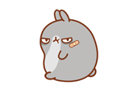

<body onload="loadFiles()">

  <div id="topBar">
    <h1 id="topText">Twitter Sentiment Analysis</h1>
    <ul>
      <li><a href="TopTags.html">Top 10</a></li>
      <li><a href="Happiest.html">Happiest 5</a></li>
    </ul>
  </div>

  <div id="spacer"></div>

  <div id="container">
    <div id="navButtons">
      <button id="back" type="button" class="btn btn-info btn-sm">&#8619; &nbsp;Back</button>
      <button id="next" type="button" class="btn btn-info btn-sm">Next &#8620;</button>
      <button id="toggle" type="button" class="btn btn-info btn-sm">Emoji ❤</button>
    </div>
  </div>

  <div id="pholder">
    <div id="status">
      <table id="tweetdom">
      </table>
      <div style="height: 25px;">
      </div>
    </div>
  </div>

  <footer class="footer">
  </footer>

</body>
</html>

<link rel="stylesheet" href="Tweetdom.css">
<link rel="stylesheet" href="https://maxcdn.bootstrapcdn.com/bootstrap/3.3.7/css/bootstrap.min.css">
<link href="https://fonts.googleapis.com/css?family=Raleway" type="text/css" rel="stylesheet">
<link href="https://fonts.googleapis.com/css?family=Lobster" type="text/css" rel="stylesheet">
<link href="https://fonts.googleapis.com/css?family=Dancing+Script" type="text/css" rel="stylesheet">
<script type="text/javascript" src="PorterStemmer1980.js"></script>
<script type="text/javascript" src="corpus.json"></script>
<script type="text/javascript" src="data_3min.json"></script>
<script src="https://ajax.googleapis.com/ajax/libs/jquery/1.12.0/jquery.min.js"></script> 
<script type="text/javascript">

$(document).ready(loadFiles);

  function loadFiles() {

    $.getJSON("data_3min.json", function(data) {
      var data = data;
    });

    $.getJSON("corpus.json", function(data) {
      var corpus = JSON.parse(JSON.stringify(data));
    });
  }

  var photo;  var userName;  var userHandler;  var text;  var month;  var day;  var stemText;

  var tweetList = []; // final tweet package, for printing
  var output = [];
  var stemCorpus = {}; // stemmered version of corpus
  var moodList = [];
  var hashtagList = [];

  // Extracting corpus keys, applying stemmer, storing to STEMCORPUS

  var tempCorpus = Object.keys(corpus);
  var temp;
  var corp;

  for (i = 0; i < tempCorpus.length; i++) {
      corp = tempCorpus[i];
      temp = stemmer (corp);

      stemCorpus[temp] = corpus[corp];
  }

  //Takes relevant information from each Tweet package and stores in TWEETLIST

  for(i = 0; i < data.length; i++) {
    if (data[i].user.lang == "en") { //ENGLISH ONLY FILTER
      var dateTemp = [];

      photo = data[i].user.profile_image_url;
      userName = data[i].user.name;
      userHandler = data[i].user.screen_name;
      text = data[i].text;
      date = data[i].created_at;

      dateTemp = date.split(" ");

        tweetList.push ({
          photo: photo,
          name: userName,
          handler: userHandler,
          text: text,
          month: dateTemp[1],
          day: dateTemp[2]
        });
    }
 }

  // Processing tweets - splitting to individual words, applying stemmer, computing mood
  
  for (i = 0; i < tweetList.length; i++) {
    var textTemp = [];
    var score = 0;
    var counter = 0;
    var average = 0;

    textTemp = (tweetList[i].text.split(" "));

    for (j = 0; j < textTemp.length; j++) {

      	justWords = textTemp[j].replace(/[,.\/!$%\^&\*;:{}=\-_`~()]/g,""); // Regex to filter out  punctuation and other unecessary characters

      	valHolder = stemmer(justWords.toLowerCase());

    if (valHolder in stemCorpus) {
        score = score + stemCorpus[valHolder];
        counter++;
      } else {
        score = score + 0;
      }
     
    }

    if (counter != 0) {                           // Method for computing individual tweet sentiment
      average = score / counter;
      moodList.push(average);      
    } else {
      moodList.push(score);
    }
  }

  // PRINTING OF TWEETS

    var start = 0;
    $("#back").attr('disabled', true);
    printTweets(start);

     $("#next").click(function() {
        $("#back").attr('disabled', false);

        start = start + 10;
        deleteTweets();
        printTweets(start);
    
    });

    $("#back").click(function() {

        start = start - 10;
        deleteTweets();
        printTweets(start);

        if (start == 0) {
          $("#back").attr('disabled', true);
        } else {
          $("#back").attr('disabled', false);
        }

    });

    function printTweets(arg) {

    for (i = arg; i < (arg+10); i++) { 

        line1 = "<tr><td class='wrapper'>" + "<div class='profile'>" + tweetList[i].name + "</div>";

        line2 = "<div class='tweet'><h5 class='handler'>@" + tweetList[i].handler + "&emsp;|&emsp;" + tweetList[i].month + " " 
        + tweetList[i].day + "</h5>" + "<p class='mainTweet'>" + tweetList[i].text + "</p>"+"</div>";

        if (moodList[i] < 0) {
          line3 = "<div class='emoji'>"+""+"</div></td>";     
        } else if (moodList[i] == 0) {
          line3 = "<div class='emoji' style='margin-top:3px;'>"+""+"</div></td>";      
        } else {
          line3 = "<div class='emoji'>"+""+"</div></td></tr>";     
        }
      
      $(line1 + line2 + line3).appendTo("#tweetdom");
    }
}

function deleteTweets() {
  $("#tweetdom > tbody").empty();
}

// Provides default photo in case link included is broken

  function replace(image) {
      image.onerror = "";
      image.src = "Photos/Small.png";
    return true;
  }

// Emoji toggle method

  $("#toggle").click(function() {

    if($(".sentiment").css('display') == 'block') {
      $(".sentiment").hide('slow');
    } else {
      $(".sentiment").show('slow');
    }
  }); 

</script>